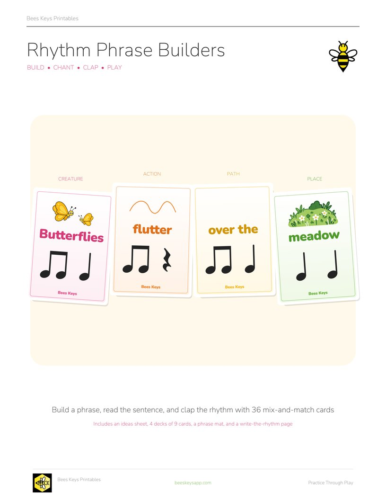
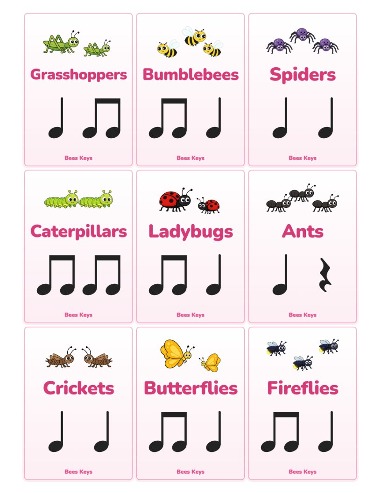
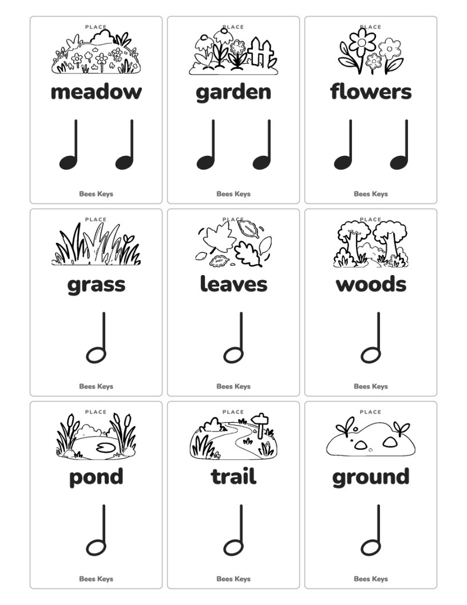

Free printable
Rhythm Phrase Builders
Mix-and-Match Rhythm Cards
By Kristianna Callahan · Published October 15, 2026

Click to download the free PDFI love using language to help my students understand how rhythms fit together. Understanding the structure of a sentence can also help students see how musical phrases work like musical sentences. Combining language and music can be a powerful way to make connections, strengthen rhythmic understanding, and deepen the way students interpret music.
These Rhythm Phrase Builder cards work as stand-alone rhythm flash cards, but they become even more fun when students mix and match them to create sentences! Each phrase follows the structure:
Noun + Verb + Preposition/Article + Noun
Download the free printable
Free PDF · no sign-up Download the full-color set
Black and white · color your own Download the printer-friendly set
-

Full-color cards The Creature deck. Creature, Action, Path and Place each have their own color, nine cards to a page. -

Printer-friendly cards The Place deck in black and white. Creatures and places are outlines for students to color.
Use the cards to:
- Mix and match cards to build rhythmic phrases.
- Clap the rhythm while chanting the words.
- Choose a 5-finger scale and create a melody to go with your new rhythm phrase.
- With more advanced students, improvise over a I–IV–V–I chord progression, using one chord per card.
The PDF also includes even more ideas for rhythm games, ear training, improvisation, and composition, along with a phrase mat and write-the-rhythm page.
Printer-friendly version 🖍️
The second download is the same set in black and white: the creatures and places are outlines, so students can color their own cards. The category name is printed on each card instead of the color. Print it single-sided to save ink.
Printing and cutting
For the full-color deck, print double-sided, flipped on the long edge: each page of card backs is followed by its page of card fronts, so a duplex print lines them up and each deck shuffles face down in its own color. The printer-friendly deck is fronts only, so print it single-sided. Card stock holds up best.
Want more free music teaching resources?
I'm making more printables, games, and teaching resources. Send me a note and I'll pass new freebies your way.
Free · unsubscribe any time Send me new freebies
Opens your mail app. Your address is only ever used to send you the free resources.